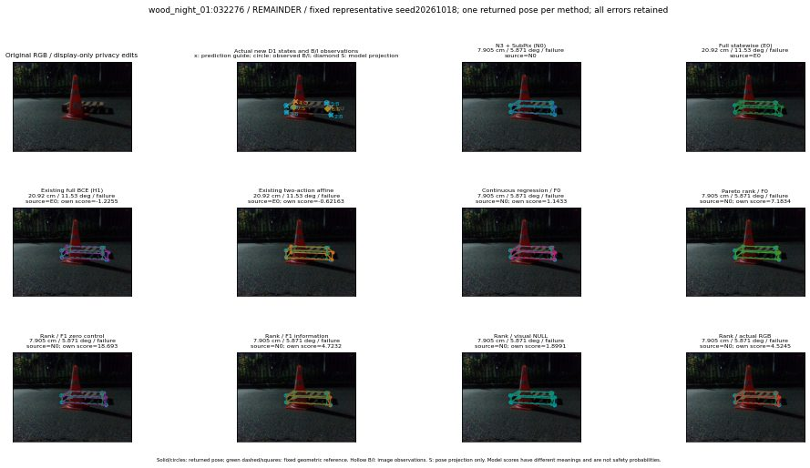

실선은 반환 자세, 초록 점선은 고정 기하 참조입니다. S는 영상 관측이 아닙니다. 점수는 모델별 의미가 다르며 보정된 안전 확률이 아닙니다. 개인정보 처리는 표시 사본에만 적용했습니다.
| 방법·seed | 위치 / 회전 / 공동성공 | 실제 출처 | 선택 후보 | 각 모델 자체 점수 |
|---|---|---|---|---|
| N0 | 7.905 cm / 5.871 deg / failure | N0 | N/A | N/A |
| E0 | 20.92 cm / 11.53 deg / failure | E0 | N/A | N/A |
| E0_REGENERATED | 20.92 cm / 11.53 deg / failure | E0 | E0_REGENERATED | N/A |
| POSEFIX_SUBPIX_PF_ANCHOR | 54.77 cm / 82.12 deg / failure | OTHER | N/A | N/A |
| POSEFIX_SUBPIX_YOLO_ANCHOR | 54.77 cm / 82.12 deg / failure | OTHER | N/A | N/A |
| D1_H1_MLP_s20261018 | 20.92 cm / 11.53 deg / failure | E0 | E0_REGENERATED | -1.2254998683929443 |
| D1_H1_MLP_s20261019 | 20.92 cm / 11.53 deg / failure | E0 | E0_REGENERATED | -1.0982465744018555 |
| D1_H1_MLP_s20261020 | 20.92 cm / 11.53 deg / failure | E0 | E0_REGENERATED | -2.012983560562134 |
| D1_H1_PAIR_MLP_s20261018 | 20.92 cm / 11.53 deg / failure | E0 | E0_REGENERATED | -1.4781619310379028 |
| D1_H1_PAIR_MLP_s20261019 | 20.92 cm / 11.53 deg / failure | E0 | E0_REGENERATED | -1.8142491579055786 |
| D1_H1_PAIR_MLP_s20261020 | 20.92 cm / 11.53 deg / failure | E0 | E0_REGENERATED | -2.2646923065185547 |
| D1_H1_PAIR_ROLE_AFFINE_s20261018 | 20.92 cm / 11.53 deg / failure | E0 | E0_REGENERATED | -0.621630072593689 |
| D1_H1_PAIR_ROLE_AFFINE_s20261019 | 20.92 cm / 11.53 deg / failure | E0 | E0_REGENERATED | -0.9674827456474304 |
| D1_H1_PAIR_ROLE_AFFINE_s20261020 | 20.92 cm / 11.53 deg / failure | E0 | E0_REGENERATED | -0.6820002198219299 |
| R_CONT_F0_s20261018 | 7.905 cm / 5.871 deg / failure | N0 | N0 | 1.1432558298110962 |
| R_CONT_F0_s20261019 | 20.92 cm / 11.53 deg / failure | E0 | E0_REGENERATED | 1.0874149799346924 |
| R_CONT_F0_s20261020 | 8.598 cm / 6.456 deg / failure | OTHER | P1/ORIGINAL_WD/selected | 1.2515757083892822 |
| R_ORDER_F0_s20261018 | 7.905 cm / 5.871 deg / failure | N0 | N0 | 7.183383941650391 |
| R_ORDER_F0_s20261019 | 7.905 cm / 5.871 deg / failure | N0 | N0 | 2.8962578773498535 |
| R_ORDER_F0_s20261020 | 7.905 cm / 5.871 deg / failure | N0 | N0 | -9.221977233886719 |
| R_ORDER_F1_ZERO_s20261018 | 7.905 cm / 5.871 deg / failure | N0 | N0 | 18.692626953125 |
| R_ORDER_F1_ZERO_s20261019 | 7.905 cm / 5.871 deg / failure | N0 | N0 | 12.07972240447998 |
| R_ORDER_F1_ZERO_s20261020 | 7.905 cm / 5.871 deg / failure | N0 | N0 | 6.602391242980957 |
| R_ORDER_F1_s20261018 | 7.905 cm / 5.871 deg / failure | N0 | N0 | 4.723171234130859 |
| R_ORDER_F1_s20261019 | 8.598 cm / 6.456 deg / failure | OTHER | P1/ORIGINAL_WD/selected | 4.683977127075195 |
| R_ORDER_F1_s20261020 | 7.905 cm / 5.871 deg / failure | N0 | N0 | 3.265683650970459 |
| V_ORDER_NULL_s20261018 | 7.905 cm / 5.871 deg / failure | N0 | N0 | 1.8990566730499268 |
| V_ORDER_NULL_s20261019 | 8.598 cm / 6.456 deg / failure | OTHER | P1/ORIGINAL_WD/selected | 0.6228790879249573 |
| V_ORDER_NULL_s20261020 | 7.905 cm / 5.871 deg / failure | N0 | N0 | 3.016244888305664 |
| V_ORDER_RGB_s20261018 | 7.905 cm / 5.871 deg / failure | N0 | N0 | 4.5244855880737305 |
| V_ORDER_RGB_s20261019 | 8.598 cm / 6.456 deg / failure | OTHER | P1/ORIGINAL_WD/selected | 0.20084036886692047 |
| V_ORDER_RGB_s20261020 | 7.905 cm / 5.871 deg / failure | N0 | N0 | -3.728034734725952 |